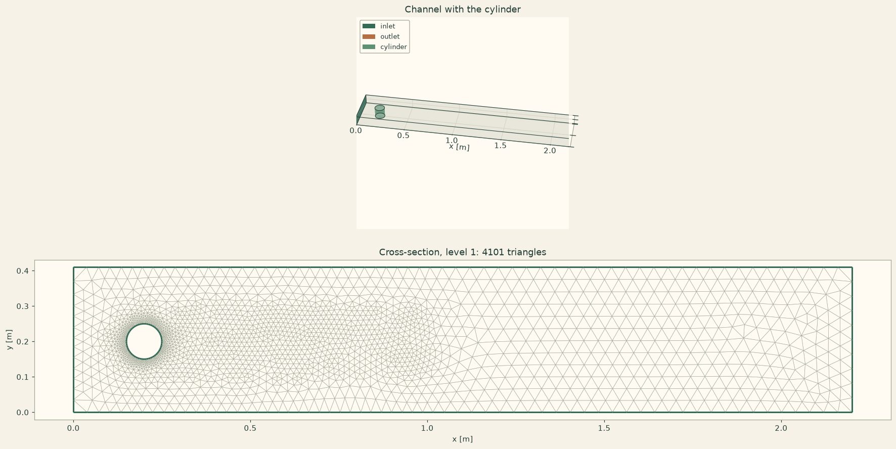

Docs › Examples › Flow past a cylinder (DFG benchmark 2D-1)
Incompressible flow · 2D
Flow past a cylinder (DFG benchmark 2D-1)
The classical channel flow past a circular cylinder at Re = 20: pressure drop across the cylinder and recirculation length against the international benchmark.
Run locally with OneSimulation. The example downloads are free. Running them requires an activated runtime. The current pilot runs on macOS on Apple Silicon with CPython 3.13. Installation and activation · View pilot plans. Scope of the reference checks.

What it computes
OneSimulation cuts the channel with the cylinder from a STEP part, meshes the cross-section with triangles graded towards the cylinder and the wake on three levels and solves the steady two-dimensional Navier-Stokes equations with Taylor-Hood elements and Newton iteration. The script that builds the STEP file comes with the notebook.
What it checks
The pressure difference of 0.117480 Pa lies inside the benchmark interval [0.1172, 0.1176] and within -3.4e-4 of the high-accuracy value 0.117520 Pa, the recirculation length of 84.56 mm inside [84.2, 85.2] mm; between the two finest meshes they change by 0.004 % and 0.06 %.
Geometry
The notebook starts at the import of the CAD file flow_past_cylinder_dfg_benchmark.step: STEP (AP242), readable by any CAD program, with the names of the faces that the boundary conditions use. Put it next to the notebook.

The geometry script
The script flow_past_cylinder_dfg_benchmark_geometry.py builds the geometry with the CAD objects of OneSimulation and writes the file. Change a dimension there, run it, and run the notebook again.
"""Geometry of the OneSimulation example "Flow past a cylinder: the DFG benchmark 2D-1".
Builds the channel, 2.2 m long and 0.41 m high, with the cylinder of diameter 0.1 m centred at
(0.2, 0.2) m cut out of it, as a slab 0.1 m thick with the CAD objects of OneSimulation and writes
flow_past_cylinder_dfg_benchmark.step. The faces are grouped as inlet (x = 0), outlet (x = 2.2 m),
walls (y = 0 and y = 0.41 m) and cylinder. The example computes on the cross-section z = 0.05 m,
whose sides keep the names x_min, x_max, y_min, y_max and cylinder.outer_wall.
"""
from onesim.cad.d3 import Box, Cylinder
thickness = 0.1
channel = Box(length=2.2, width=0.41, height=thickness) - Cylinder(
radius=0.05, length=thickness, origin=(0.2, 0.2, 0.0)
).named("cylinder")
faces = channel.boundaries
channel = channel.grouped(
inlet=faces.x_min,
outlet=faces.x_max,
walls=faces.y_min | faces.y_max,
cylinder=channel.select(faces=lambda face: face.kind == "cylinder"),
)
channel.save("flow_past_cylinder_dfg_benchmark.step")The notebook
The complete notebook, cell by cell. Run it to produce the figures and the comparison printout.
The benchmark "laminar flow around a cylinder" of the German Research Foundation (DFG) priority programme is the standard test for incompressible flow solvers. A Newtonian fluid (\(\rho=1\) kg/m³, \(\nu=10^{-3}\) m²/s) flows through a channel of length 2.2 m and height \(H=0.41\) m past a cylinder of diameter \(D=0.1\) m centred at \((0.2, 0.2)\) m - slightly below the channel axis, so the flow is not symmetric and the cylinder carries a small lift. The inflow profile is parabolic with the peak speed \(U_m=0.3\) m/s, i.e. the mean speed \(\bar U=2U_m/3=0.2\) m/s and the Reynolds number \(Re=\bar U D/\nu=20\). At this Reynolds number the flow is steady: a pair of standing vortices forms behind the cylinder.
The benchmark asks for the drag and lift coefficients
the pressure difference \(\Delta p=p(0.15,0.2)-p(0.25,0.2)\) between the front and the back point of the cylinder, and the length \(L_a\) of the recirculation zone behind it. This example compares the pressure difference and the recirculation length.
The channel comes from the CAD file flow_past_cylinder_dfg_benchmark.step, a slab of the channel with the cylinder cut out; the script flow_past_cylinder_dfg_benchmark_geometry.py builds it with the CAD objects of OneSimulation and names the faces. The model is its cross-section: OneSimulation solves the two-dimensional steady Navier-Stokes equations with Taylor-Hood elements (quadratic velocity, linear pressure) and a Newton solver.
| side of the cross-section | condition | |---|---| | x_min (inlet, \(x=0\)) | parabolic velocity \(u=4U_m\,y(H-y)/H^2\), \(v=0\) | | y_min, y_max (walls) and cylinder.outer_wall | no slip | | x_max (outlet, \(x=2.2\) m) | traction free (also fixes the pressure level) |
The benchmark prescribes the "do-nothing" outflow of the Laplace form of the viscous term; the traction-free outlet of the symmetric-stress form used here differs only in the tangential stress two metres behind the cylinder, where the flow is fully developed again.
Reference. M. Schaefer and S. Turek, "Benchmark computations of laminar flow around a cylinder", in E. H. Hirschel (ed.), Flow Simulation with High-Performance Computers II, Notes on Numerical Fluid Mechanics 52, Vieweg 1996, pp. 547-566, test case 2D-1: the published intervals \(c_D\in[5.57,5.59]\), \(c_L\in[0.0104,0.0110]\), \(L_a\in[0.0842,0.0852]\) m, \(\Delta p\in[0.1172,0.1176]\) Pa; and the high-accuracy values \(c_D=5.57953523384\), \(c_L=0.010618948146\), \(\Delta p=0.11752016697\) Pa of later studies (V. John and G. Matthies, Int. J. Numer. Meth. Fluids 37, 885-903, 2001; FEATFLOW benchmark collection, TU Dortmund).
import numpy as np
from onesim.cad.exchange import load
from onesim.materials import NewtonianFluid
from onesim.meshing import TriangularMesher
from onesim.numerics import Numerics
from onesim.numerics.fem import FiniteElement, TaylorHood
from onesim.numerics.linear import SparseDirect
from onesim.numerics.nonlinear import Newton
from onesim.physics.hydrodynamics import (
FixedVelocity,
FlowTraction,
NoSlipWall,
PlanarIncompressibleNavierStokes,
)
from onesim.results.comparisons import convergence
from onesim.simulation import Problem, Simulation
from onesim.visualization import plots, theme
theme.set()
reference = {
"pressure difference dp [Pa]": ((0.1172, 0.1176), 0.11752016697),
"recirculation length L_a [m]": ((0.0842, 0.0852), None),
}Geometry and mesh
section cuts the slab at half thickness; the sides of the cross-section are named x_min ... y_max and cylinder.outer_wall. The triangles are \(6\,\text{mm}/\ell\) wide on the cylinder, grow over one diameter around it, are at most \(12\,\text{mm}/\ell\) in the near wake and \(40\,\text{mm}/\ell\) far away, for the mesh levels \(\ell = 1, 3/2, 9/4\).
part = load("flow_past_cylinder_dfg_benchmark.step")
channel = part.section((0, 0, 1), origin=(0, 0, part.size[2] / 2))
faces = channel.boundaries
cylinder = faces["cylinder.outer_wall"]
length, height = channel.size[:2]
centre, radius = np.array([0.2, 0.2]), 0.05
size = lambda p: np.minimum(
np.minimum(
0.006 + 0.15 * np.maximum(np.hypot(*(p[:, :2] - centre).T) - radius, 0.0), 0.04
),
np.where(
(p[:, 0] > centre[0])
& (p[:, 0] < 1.0)
& (np.abs(p[:, 1] - centre[1]) < 2 * radius),
0.012,
0.04,
),
)
levels = (1.0, 1.5, 2.25)
meshes = {
level: TriangularMesher(
target_size=0.04 / level,
grading=0.15,
hard_sizes={"cylinder.outer_wall": 0.006 / level},
size_field=lambda p, level=level: size(p) / level,
).generate(channel)
for level in levels
}
fig = plots.figure(2, 1, size=(16, 8))
plots.geometry(
part,
selection={
"inlet": part.boundaries.inlet,
"outlet": part.boundaries.outlet,
"cylinder": part.boundaries.cylinder,
},
labels=False,
camera=plots.Camera(elevation=35, azimuth=-80),
title="Channel with the cylinder",
ax=fig[0],
)
plots.mesh(
meshes[1.0],
groups=("all",),
legend=False,
title=f"Cross-section, level 1: {meshes[1.0].cell_count} triangles",
ax=fig[1],
)
plots.show()Model
One stationary Navier-Stokes solve per mesh with the boundary conditions of the table, each Newton iteration starting from rest.
fluid = NewtonianFluid(density=1.0, dynamic_viscosity=1.0e-3)
peak_speed = 0.3
mean_speed = 2 * peak_speed / 3
model = PlanarIncompressibleNavierStokes(domain=channel.domain(), material=fluid)
problem = Problem(
name="DFG benchmark 2D-1",
geometry=channel,
physics=(model,),
boundary_conditions=(
FixedVelocity(
boundary=faces.x_min,
physics=model,
value=lambda y: np.column_stack(
(4 * peak_speed * y * (height - y) / height**2, 0 * y)
),
),
NoSlipWall(boundary=faces.y_min | faces.y_max | cylinder, physics=model),
FlowTraction(boundary=faces.x_max, physics=model, value=(0.0, 0.0)),
),
)
numerics = Numerics(
spatial=FiniteElement(element=TaylorHood()),
initial_guess={model.velocity: (0.0, 0.0)},
nonlinear_solver=Newton(
linear_solver=SparseDirect(),
absolute_tolerance=1e-10,
relative_tolerance=1e-10,
maximum_iterations=30,
),
)
results = {
level: Simulation(problem=problem, mesh=mesh, numerics=numerics).solve_stationary()
for level, mesh in meshes.items()
}
velocity = {level: result.field(model.velocity) for level, result in results.items()}
pressure = {level: result.field(model.pressure) for level, result in results.items()}Results
The pressure difference is read at the front and the back point of the cylinder; the recirculation length is where \(u\) turns positive again on the centre line behind the cylinder. The mesh study shows how much each quantity still changes between the two finest meshes.
behind = np.column_stack(
(np.linspace(centre[0] + radius + 1e-4, 0.45, 4001), np.full(4001, centre[1]))
)
values = {
level: dict(
zip(
reference,
(
float(
np.subtract(
*pressure[level]
.evaluate(np.array([[0.15, 0.2], [0.25, 0.2]]))
.ravel()
)
),
behind[np.argmax(velocity[level].evaluate(behind)[:, 0] > 0), 0]
- centre[0]
- radius,
),
)
)
for level in levels
}
print(
f"Reynolds number: {fluid.density * mean_speed * 2 * radius / fluid.dynamic_viscosity:.1f}"
)
print(
f"{'quantity':30s} {'finest mesh':>12s} {'interval (1996)':>18s} {'':8s} {'high-accuracy':>14s} {'deviation':>10s}"
)
for name, (interval, accurate) in reference.items():
value = values[levels[-1]][name]
print(
f"{name:30s} {value:12.6f} [{interval[0]:.4f}, {interval[1]:.4f}] {'inside' if interval[0] <= value <= interval[1] else 'OUTSIDE':8s}"
+ (
f" {accurate:14.6f} {value / accurate - 1:+10.1e}"
if accurate
else f" {'-':>14s} {'-':>10s}"
)
)
print(
"\nmesh study (levels 1, 3/2, 9/4; "
+ ", ".join(f"{mesh.cell_count}" for mesh in meshes.values())
+ " triangles)"
)
for name, (_, accurate) in reference.items():
study = convergence(
[values[level][name] for level in levels], [1 / level for level in levels]
)
print(
f" {name:30s} "
+ " ".join(f"{values[level][name]:.6f}" for level in levels)
+ f" change between the two finest meshes {100 * study.change:+.3f} %"
)Figure
The speed in the channel, the pressure around the cylinder, the graded mesh next to the cylinder, and the mesh convergence of the pressure difference against the high-accuracy value.
finest = velocity[levels[-1]]
speed = lambda u, x: np.linalg.norm(u, axis=1)
fig = plots.figure(
layout=[["speed", "speed", "speed"], ["pressure", "near", "study"]], size=(17, 10)
)
plots.surface(
finest,
component=speed,
limits=(0.0, 0.45),
contours=9,
subdivisions=2,
label="|u| [m/s]",
title="Speed in the channel, Re = 20",
ax=fig["speed"],
)
plots.surface(
velocity[1.0],
component=speed,
limits=(0.0, 0.45),
edges=True,
subdivisions=1,
xlimits=(0.12, 0.28),
ylimits=(0.12, 0.28),
label="|u| [m/s]",
title="Level-1 mesh at the cylinder",
ax=fig["near"],
)
plots.surface(
pressure[levels[-1]],
limits="robust",
contours=12,
subdivisions=2,
xlimits=(0.1, 0.5),
ylimits=(0.05, 0.35),
label="p [Pa]",
title=f"Pressure around the cylinder, recirculation length {1e3 * values[levels[-1]]['recirculation length L_a [m]']:.1f} mm",
ax=fig["pressure"],
)
plots.line(
[1 / level for level in levels],
{
name: [abs(values[level][name] / accurate - 1) for level in levels]
for name, (_, accurate) in reference.items()
if accurate
},
slope=2,
hlines={"half-width of the 1996 dp interval": 0.0002 / 0.1174},
markers=True,
scale="loglog",
xlabel="relative cell size 1 / level",
ylabel="|value / high-accuracy value - 1|",
title="Mesh convergence",
ax=fig["study"],
)
plots.show()Going further
The companion test case 2D-2 raises the peak inflow speed to \(U_m=1.5\) m/s (\(Re=100\)): the standing vortex pair breaks up into a periodic von Karman vortex street. The benchmark then asks for the Strouhal number \(St=Df/\bar U\in[0.2950, 0.3050]\), the maximum drag coefficient \(c_{D,\max}\in[3.22, 3.24]\) and the maximum lift coefficient \(c_{L,\max}\in[0.99, 1.01]\). The same model runs it with Simulation.run and a BDF2 time integrator in place of the stationary solve; resolving the shedding needs about 50 time steps per period over several periods after the start-up. The lift, a small difference of large pressure forces on the two halves of the cylinder, converges most slowly and profits most from refinement right at the cylinder.